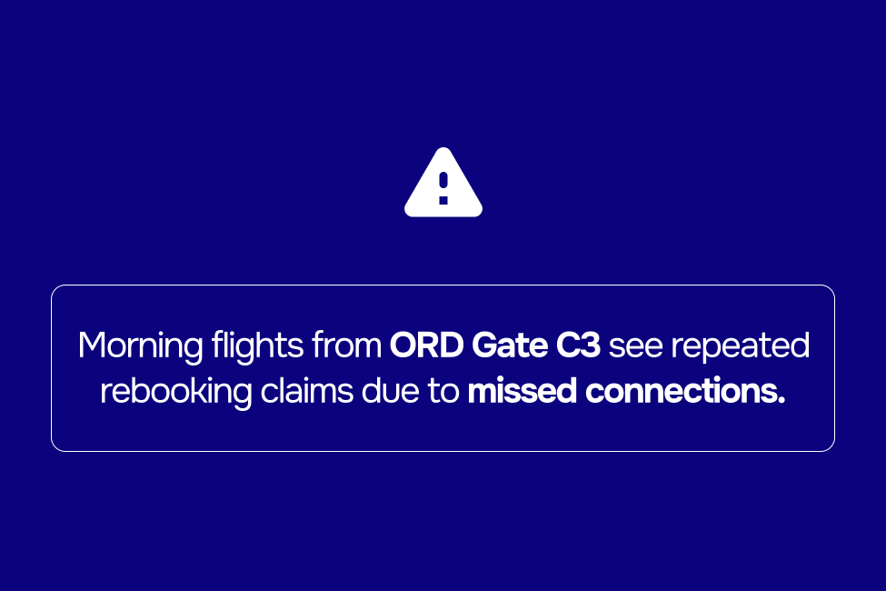

Introduction
Airline claim handling today remains highly manual, fragmented, and resource-intensive. Each claim typically requires 15–20 minutes of agent work, involving multiple system lookups across PSS/DCS, flight disruption codes, receipts and other. Agents must manually review delays, causes, and passenger entitlements, while also cross-checking for duplicates, potential fraud, and third-party submissions.
Passengers face equally poor experiences. They are required to manually enter booking details with no real-time validation, often leading to errors and weeks of delay before resolution. Template responses lack personalization, further eroding trust.
At the management level, oversight is limited. Cost categories (meals, transport, accommodation) are difficult to isolate, operational cost loops remain opaque, and processing speed cannot be easily tracked. Heavy inflows and manual workloads overwhelm agents, while managers lack the tools and data for effective control.
Key research objectives
- Identify critical pain points in current airline claim handling workflows.
- Define the real needs of airlines and passengers in the claims process.
- Explore where automation and AI can bring the most value without losing the human touch.
- Validate new approaches and solutions with industry partners and customers.
Today’s reality
- Claim handling is highly manual and slow — each case takes 15–20 minutes as agents review receipts one by one and search across multiple disconnected systems.
- Information management is poor — older claims are difficult to track because key data is hidden in archives or not stored properly.
- Passenger communication is generic and impersonal, relying on templates without personalization.
- Claim submission forms on airline websites are underutilized — they often lack real-time validation and do not give passengers space to “vent.” This misses the chance to reduce frustration, discourage unnecessary agency filings, and retain control of the process in a more cost-effective way.
- Most airlines lack a smart offering strategy — passengers are only given standard cash refunds, missing chances to use miles, vouchers, or goodwill discounts to improve NPS.
- AI opportunities are underutilized — few airlines apply automation for fraud detection, eligibility checks, or personalized offers, leaving both efficiency gains and customer satisfaction untapped.
The result: higher costs, frustrated passengers, and erosion of brand trust.
Research methodology
This study employs a mixed-methods approach, combining qualitative interviews with airline operational managers, claims agents, and customer service leaders with a review of relevant industry documentation and regulatory frameworks. Case examples of large-scale disruption events are analyzed to highlight current limitations and explore potential improvements.
Data sources
- Interviews with airline claims managers, finance teams, and customer service agents.
- Industry reports and regulatory documentation (e.g., EC261, DOT, Montreal Convention).
- Case studies of passenger disruption and claims management workflows.
- Analysis of claim intake channels and validation processes.
- Operational data on costs, processing times, and resolution outcomes.
We’ve built working prototypes as part of this research, turning ideas into something you can experience.
If you’d like to explore them firsthand simply get in touch with us.
Claim entry and validation
Challenges today
Claim entry and validation are still fragmented, leaving gaps for both passengers and agents. Passengers often face unclear forms and limited guidance, resulting in incomplete or inaccurate submissions.
On the other side, agents must verify each claim manually against booking data, disruption codes, and receipts in multiple systems. The absence of real-time validation slows resolution, increases costs, and exposes airlines to duplicate or fraudulent claims.
Key challenges include:
- Claim entry by passengers: Poorly designed forms lead to missing receipts, inconsistent details, and higher error rates.
- Manual validation by agents: Disconnected systems force repetitive checks and create inconsistent outcomes.
- No automated safeguards: Lack of real-time validation leaves airlines vulnerable to duplicates, delays, and fraud.
Our vision
- Smart entry points: Website, app, and chatbots provide seamless self-service; agent-assisted flows only for exceptions.
- Connected validation: Integration with PSS, OPS, CRM, and Finance enables instant eligibility checks and duplicate detection.
- Risk-based automation: Simple ineligible cases filtered immediately, edge cases escalated to agents for review.
- Passenger-centered design: Progressive forms with real-time validation, progress indicators, and a vent box to capture emotion and prevent escalation to agencies.
- Fraud protection: Rules and AI models detect duplicates, suspicious behavior, and tampered documents early.
- Configurable flows: Airlines define documents, automation thresholds, payout rules, and escalation processes by region.
AI opportunities
- NLP parsing of IATA, METAR, and NOTAM messages for disruption context.
- Predictive fraud detection across passenger behavior and documents.
- Automated outcome prediction with suggested next actions for agents.
- Continuous learning from past claims to refine thresholds and rules.
Design principles
- Keep the entry flow simple and fast — essentials first, documents later.
- Provide immediate acknowledgment and clear timelines.
- Always offer escalation and human override for edge cases.
- Adapt flows by geography, jurisdiction, and airline policy.
Offering and compensation
Challenges today
Airlines face a constant balancing act between cost control, regulatory compliance, and passenger satisfaction. Too often, compensation is generic and legalistic, disconnected from the actual disruption experience. Well-informed passengers push for maximum payouts, while others accept the first offer—yet both groups are frustrated by slow responses, impersonal communication, and a lack of transparency.
Airlines also miss opportunities to use compensation as a loyalty driver. Simple gestures like miles, upgrades, or lounge access could build satisfaction and trust—but are rarely offered proactively. As a result, passenger interactions remain largely transactional and unsatisfying.
Key challenges include:
- Generic, legalistic offers: Compensation is often disconnected from the actual disruption, feeling transactional rather than empathetic.
- Slow and impersonal response: Delays, opaque processes, and lack of transparency frustrate both informed and unaware passengers.
- Missed loyalty opportunities: Simple gestures like miles, upgrades, or lounge passes could drive satisfaction but are rarely offered proactively.
Our vision
The aim is to transform compensation into a smart, automated, and loyalty-driven process that addresses the challenges airlines face today: operational complexity, slow responses, and missed opportunities to engage passengers effectively.
Key capabilities include
- Smart compensation offerings: Instead of default cash refunds, offer miles, credits, vouchers, or discount codes where appropriate. Even when a claim is not legally eligible, low-cost gestures (e.g., 20% off the next flight or a small voucher) can preserve goodwill and strengthen loyalty.
- Automated processing: All types of compensation—credits, vouchers, miles, gift cards, or discounts—are handled automatically. The system processes standard cases instantly, while exceptions are flagged for agent review, ensuring speed and consistency.
- Dynamic offer engine: Combines CRM, OPS, and Finance data to determine the most cost-effective and impactful offers for each passenger. Automatically escalates unusual or high-value cases for agent attention.
- Transparent, empathetic communication: Offers come with clear explanations, timelines, and FAQs. Automated notifications reduce back-and-forth and improve passenger satisfaction.
- Agent empowerment: Agents have full visibility of all offers, rationale, and override options to handle exceptions, maintain consistency across hubs, and manage outsourced ground operations efficiently.
Processing and agent tools
Challenges today
Handling claims is complex and time-sensitive. Agents face high volumes, inconsistent data, overlapping regulations, and the need to balance speed with accuracy. Manual processes and scattered information slow resolution, increase errors, and make it hard to maintain consistent service.
Agents often work on claims individually or in small groups without full context. Managers lack centralized visibility, making it difficult to monitor performance, spot bottlenecks, or identify exceptions quickly. This fragmented approach reduces throughput and increases operational risk.
Key challenges include:
- Fragmented workflows: Agents and managers often rely on disconnected systems, manual checks, and inconsistent procedures.
- High manual workload: Sorting, verifying, and processing claims takes significant time and effort, leaving little room for exceptions or escalations.
- Limited visibility: Managers cannot easily track claim status, SLA adherence, or high-risk cases in real time.
- Slow, inconsistent communication: Passengers may experience delays or errors in updates due to manual handling and scattered information.
Our vision
All important data is available at a glance: flight details, passenger name, claim status, tags, and hover-over notes for receipts or internal comments. Agents can perform multi-step scenarios—like verifying, messaging, tagging, and resolving a claim—in a single click, drastically reducing manual effort and improving throughput.
Agent tools
- Case assignment and collaboration across claim groups
- Internal notes at claim, booking, and flight levels
- Hover-over notes, receipts, and tags for quick reference
- Scenario automation: execute multiple actions with one click
- Automated verification for standard claims; manual verification available for exceptions
- Batch processing of similar claims to speed resolution
Manager tools
Managers gain full visibility into claim workflows with dashboards and customizable views. They can monitor unresolved claims, SLA violations, and high-value or flagged cases. Managers can assign specific claims or groups to agents, add internal notes, and approve or escalate cases with minimal clicks.
- Default and custom dashboards with stats, red flags, and warning views
- Claim lifecycle visibility, including fraud detection and SLA tracking
- Seamless approval and escalation workflow
- Insights by claim type, flight, and cost category (e.g., accommodation, meals, transport)
- Exporting options for reporting and regulatory compliance
- Automated alerts for claims requiring second review or exceptional handling
Smart logic and automation
- Scenario automation: multi-step processes executed with a single click
- Automated processing of credits, vouchers, miles, and discount codes
- Fraud detection triggers for duplicate claims, mismatched data, or unusual patterns
- Optional API verification “on-demand” without pre-collecting passenger data

Communication and payments
- Templates selected based on passenger type and flight tag
- Channels: Email, SMS, WhatsApp, or other messaging apps
- AI-generated response suggestions available as editable drafts
- Automated payout via voucher, cash, or gift card; escalations to finance/legal if thresholds exceeded
- Manual override possible for sensitive cases or government involvement

Status and communication
Challenges today
Passengers expect timely, clear, and trustworthy updates after submitting a claim. Immediate automation can feel impersonal, while delays or inconsistent communication can frustrate passengers. Airlines must balance automation with human touch and strategic timing.

Key challenges include:
- Delayed or inconsistent updates: Passengers often receive late notifications or incomplete information about their claims, causing frustration and distrust.
- Automation can feel impersonal: Immediate messages without context may feel robotic, reducing perceived care and empathy.
- Lack of real-time control: Agents and managers cannot easily adjust messaging or intervene for high-priority or sensitive cases.
- Fragmented communication channels: Emails, SMS, WhatsApp, and other channels are not always coordinated, leading to confusion and missed messages.
- Insufficient audit and visibility: Airlines struggle to track communication history, monitor SLA compliance, or verify that passengers received updates correctly.
Our vision
To address this, our approach combines clarity, efficiency, and event-driven messaging:
- Immediate acknowledgment: The passenger receives a first automated message confirming receipt of their claim, including the expected processing time.
- Scheduled follow-ups: Subsequent messages, such as eligibility notifications or additional requests, can be timed strategically, for example within 24 hours, to feel more personal.
- Automation with human perception: Even if the system knows the claim is not eligible immediately, delaying certain messages slightly helps passengers feel their case was reviewed thoughtfully.
- Agent override and customization: Managers or agents can adjust timings, templates, and triggers to match specific airline policies or passenger expectations.
By combining automation, event-driven timing, and intelligent oversight, passengers are kept informed while feeling genuinely attended to, transforming the post-submission experience into a source of trust, loyalty, and operational efficiency.
Trust-building in action
All communications are designed to reinforce transparency and confidence:
- Clear next-step guidance and progress indicators for each claim milestone
- Consistent airline branding across emails, SMS, or messaging apps
- Automated document generation and validation, including delay confirmations and PIRs
- Event-driven messaging schedules that balance automation with the perception of personal attention
- Secure integration with portals, widgets, or APIs, with an audit trail for all communications
- Human oversight for exceptions, ensuring passengers feel genuinely heard
Reporting and insights
Challenges today
Airline claims teams often struggle to get timely, accurate insights from fragmented systems. Limited visibility, manual data aggregation, and inconsistent reporting make it hard to monitor performance, track costs, and ensure compliance. Without a unified reporting approach, teams are slow to identify trends, respond to operational issues, or optimize processes.
Key challenges include:
- Lack of real-time visibility: Managers and agents cannot quickly track high-volume queues, SLA compliance, or automation success rates.
- Manual aggregation: Data often needs to be compiled manually for reports, increasing workload and the risk of errors.
- Limited insight into trends: Teams struggle to identify patterns, recurring issues, or emerging risks without predictive analytics.
- Compliance and audit challenges: Tracking regulatory requirements, claim validation failures, and internal SLAs is cumbersome without automated oversight.
Our vision
Airline claims teams need actionable insights to manage performance, costs, and compliance. A powerful reporting system should provide flexible, detailed views for both agents and managers, enabling quick analysis of high-volume queues, SLA compliance, and agent efficiency.
Operational dashboards allow teams to:
- Monitor total claims, resolved vs unresolved, and weekly trends
- Track average resolution and handling times per claim
- Analyze SLA compliance and automation success rates
- Break down costs by category: meals, transport, accommodation for EC261 reimbursements
- Review validation failures and flagged claims for training or fraud detection

AI-powered insights
AI enhances decision-making and anticipates issues before they escalate:
- Trend and anomaly detection across routes, flights, or claim types
- Sentiment analysis from customer feedback to monitor satisfaction
- Predictive analytics for seasonal or route-specific peaks
- Fraud pattern detection using validation failures, repeated claims, and unusual behaviors
- Custom reports generated via natural language queries for operations, finance, or regulatory teams
Managers can also define reusable execution scenarios, such as one-click escalation, tagging, or reassignment, to reduce repetitive work while ensuring compliance and consistent handling across teams.
Daily and weekly dashboards provide a comprehensive view of claims activity, including automation rates, agent performance, and CSAT scores where available. Separate internal statuses: claimable, unclaimable, partially claimable, or claimable expenses are mapped to simplified passenger views to maintain transparency without exposing operational complexity. Teams can filter and save specific views, such as high-delay claims, meal claims for a specific route, or unverified claims, enabling faster, confident decisions and continuous process improvement.
Next-generation claims platform
Imagine a single, unified interface where all claim details, eligibility checks, and passenger verification are available in one view. AI assists at every step, drafting contextual responses, reading receipts, summarizing costs, and detecting fraud, while giving agents complete control when needed.
Smart claim handling
- Automatic reading and summarization of receipts and supporting documents
- Instant claim eligibility checks across multiple jurisdictions and systems
- Duplicate detection and smart categorization running in the background
- AI-generated recommendations for approvals, escalations, or alternative offers like miles or vouchers
Advanced fraud detection
- Behavioral pattern analysis to flag unusual submissions
- Receipt and document validation using vision models to detect tampering
- Dynamic trust scoring of claimants to adjust scrutiny levels intelligently
- Alerts for repeated submissions, multiple identities, or suspicious patterns
Actionable insights and reporting
- Trends and root cause analysis by flight, airport, aircraft type, or disruption type
- Policy optimization suggestions to reduce cost and improve NPS
- Agent performance analytics and coaching recommendations
- Customizable dashboards for operational, financial, and compliance reporting
AI copilot for agents
- Internal chat to query the system: “Why was this rejected?” or “What’s the cheapest compliant solution?”
- Guides agents with suggested next steps, legal justifications, and cost-effective resolutions
- Combines automation with human oversight to handle complex or sensitive claims
- Adapts dynamically to changing regulations and airline-specific rules